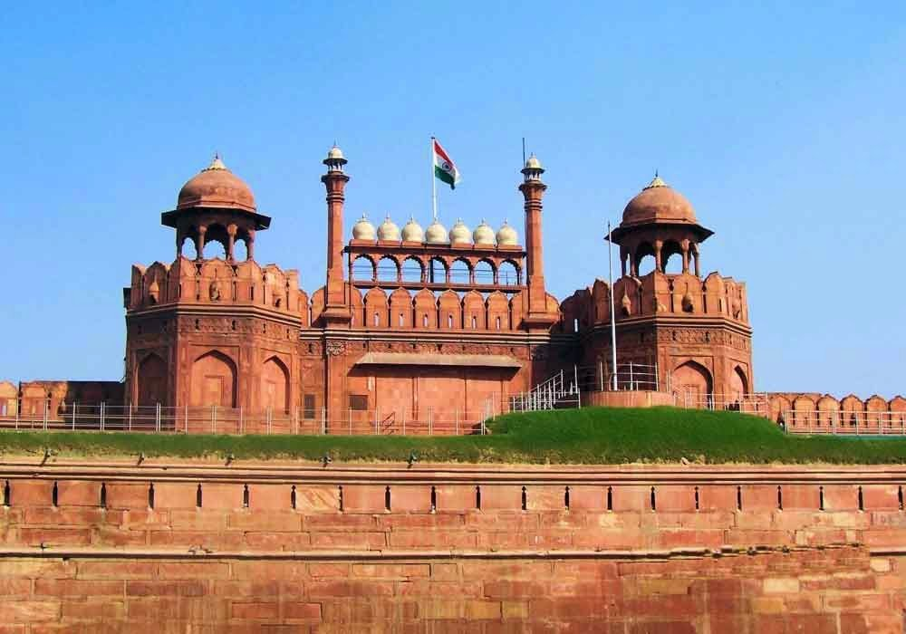

India Gate

Red Fort

Qutub Minar
Delhi, India’s capital territory, is a massive metropolitan area in the country’s north. In Old Delhi, a neighborhood dating to the 1600s, stands the imposing Mughal-era Red Fort, a symbol of India, and the sprawling Jama Masjid mosque, whose courtyard accommodates 25,000 people. Delhi offers numerous tourist attractions ranging from monuments, museums, shrines to modern day markets. Exploring the city is like witnessing a mini-India, with Delhi Tourism being a reflection of rich culture of India. Delhi should be best explored during winters when it witnesses cold but moderately pleasant weather.Visit for UNESCO World Heritage sites, Red Fort, Qutub Minar, Humayun’s Tomb, worshipping place for all religions, monuments, local markets, street food, cultural tourism, heritage walks, bird watching, nightlife, sightseeing, amusement parks, photography tour, and pre-wedding shoots.